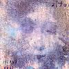

Celtic Lyrics Corner > Artists & Groups > Altan > Island Angel > Dúlamán
|
 |
Dúlamán |
| Credits : | Traditional; arranged by Altan |
| Appears On : | Island Angel ; The Best Of Altan ; Gaelic Ireland (compilation) |
| Language : | Gaeilge (Irish Gaelic) |
| Other Versions : |
"
Dúlaman
" on Anúna's album Omnis
" Dúlaman " on the Celtic Woman: A New Journey soundtrack " Dúlamán " on Clannad's album Dúlamán |
| Lyrics : | English Translation : |
| A 'níon mhín ó, sin anall na fir shúirí | Oh gentle daughter, here come the wooing men |
| A mháithair mhín ó, cuir na roithléan go dtí mé | Oh gentle mother, put the wheels in motion for me |
| Curfá : | Chorus (after each verse) : |
| Dúlamán na binne buí, dúlamán Gaelach | Seaweed from the yellow cliff, Irish seaweed |
| Dúlamán na farraige, 's é b'fhearr a bhí in Éirinn | Seaweed from the ocean, the best in all of Ireland |
| Tá cosa dubha dubailte ar an dúlamán gaelach | There is __ on the Irish seaweed |
| Tá dhá chluais mhaol ar an dúlamán gaelach | There are two blunt ears on the Irish seaweed |
| Rachaimid go Doire leis an dúlamán gaelach | I would go to Dore with the Irish seaweed |
| Is ceannóimid bróga daora ar an dúlamán gaelach | "I would buy expensive shoes," said the Irish seaweed |
| Bróga breaca dubha ar an dúlamán gaelach | The Irish seaweed has beautiful black shoes |
| Tá bearéad agus triús ar an dúlamán gaelach | The Irish seaweed has a beret and trousers |
| Ó chuir mé scéala chuici, go gceannóinn cíor dí | I spent time telling her the story that I would buy a comb for her |
| 'S é'n scéal a chuir sí chugam, go raibh a ceann cíortha | The story she told back to me, that she is well-groomed |
| Góide a thug na tíre thú? arsa an dúlamán gaelach | "What are you doing here?" says the Irish seaweed |
| Ag súirí le do níon, arsa an dúlamán maorach | "At courting with your daughter," says the stately seaweed |
| Ó cha bhfaigheann tú mo 'níon, arsa an dúlamán gaelach | "Oh where are you taking my daughter?" says the Irish seaweed |
| Bheul, fuadóidh mé liom í, arsa an dúlamán maorach | "Well, I'd take her with me," says the stately seaweed |